ちょっぴり上海
早朝４：３０にデリーを飛び立った私たちは、１２：４０に５日前乗り換えのため長い時間カンヅメになっていた上海・北東空港へ到着。
この空港はまだ新しくて、６年前にできたものだと後でガイドさんが話していました。
ここに来てはじめて気がついたのは、上海でもインドでもスモッグがかかったように空や遠くがきれいに見えなかったのは、日本まで飛んできて車の屋根に積もっている『黄砂』のせいではないか？
ということですが、私の勝手な憶測ですのであまり気にしないでください。
上海での現地ガイドさんはちょっと太っちょのハリーさんとは対照的にスリムな男性で、名前は…
忘れました。（ _w_ ；
北東航空から３０Kmほど西へ向かうと上海の街で、車で高速を走って３０分かかるものがリニモだと７分で行ってしまうのだそうです。
その３０分の移動中に中国通貨の『元』への両替があり、１元＝￥１５。
ホテルでの枕チップは５元が相場だそうです。
高速道路から建築中のビルがたくさん見えていて、上海で分譲住宅を買うと外装や共有部分は整っていますが、内装は購入した人が自由にできるようになっており、内装費は購入価格に含まれていないのだとか…
街中で見かける『麦当労』という看板を掲げた店は『マクドナルド』だと説明されたりしながら快適に高速道路を走り、やがて江南の名園とされている【豫園】の近くでバスが止まりました。
豫園は上海を訪れた観光客の多くが足を運ぶといわれている観光スポットのひとつだそうで、豫園の『豫』という文字は『愉』という文字に繋がり楽園という意味なのだそうです。
昔懐かしいような家々の建ち並ぶ道路の端を歩きながら見ていくと、日本の昔ながらの家によくあったような土間のある家が多いようで、その土間に大根や白菜を並べた八百屋があったり、一文菓子屋のような店がぽつんぽつんとあります。
ガイドさんが掲げる旗についてそんなところを歩いていくと、【豫園商城】という商店街があり、私たちのような国外からの観光客だけではなく中国の人たちも大勢訪れているようで、まるでお祭りのように人が溢れかえっている中を通り抜けて豫園に足を踏み入れます。
豫 園
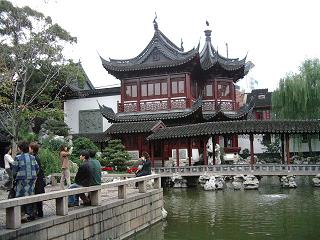
緑波池という蓮池にジグザグに架かった橋があり、写真では一部しか写っていませんがこれは九曲橋と呼ばれるもので、ジグザグになっているのは真っ直ぐにしか進めない悪霊が人の後について来れないようにするためです。
また、橋をジグザグに歩くことで様々な方向から庭を見渡せるという狙いもあるようです。
この九曲橋は、昔は石でできていたそうですが、現在はコンクリートになっています。
九曲橋の先の池の真ん中には二階建ての大きな東屋があり、これは湖心亭という茶店になっていて、時間が許せば立ち寄ってみたいところですが残念ながら外から見るだけです。
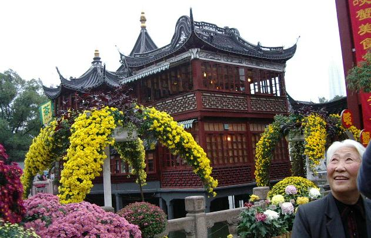
色とりどり、大きさも様々な菊の花が植えられた庭園から見る湖心亭はまた格別で、池には鯉が優雅に泳いでいました。
豫園は、明代に造られた頃には５万㎡の敷地があったそうですが、1956年に大々的に改修され現在の約２万㎡となって一般公開されるようになり、多くの観光客が訪れるようになりました。
かく言う私たちもガイドさんを見失わないようについて行くのがやっとで、気がつくと他の日本人ツアーに紛れ込んでいるという有様でした。（＾ｍ＾；

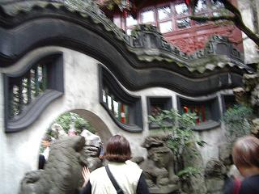
写真左で屋根の先が上を向いているのは、太陽の光をより多く取り込むためで、これは福を呼び込むということになるのだそうです。
右側の写真は、うねうねと波打った塀になっていますが、これは龍壁と呼ばれるもので、上に龍の背を模った瓦が乗せてあるので白い塀はそのお腹の部分になっているのかもしれません。

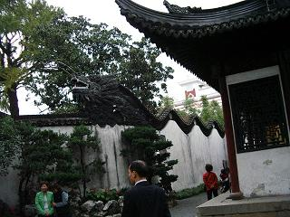
さて、この塀の先がどうなっているのかと言いますと、このように龍の頭がちゃんとついているわけですが、龍は皇族の象徴となっており、一般の建造物には使用が禁じられていたのですが、想像上の生き物とは言うものの龍の爪は５本と決まっており、この動物には４本の爪しかないので龍ではないと咎められた持ち主が答えたのだそうです。
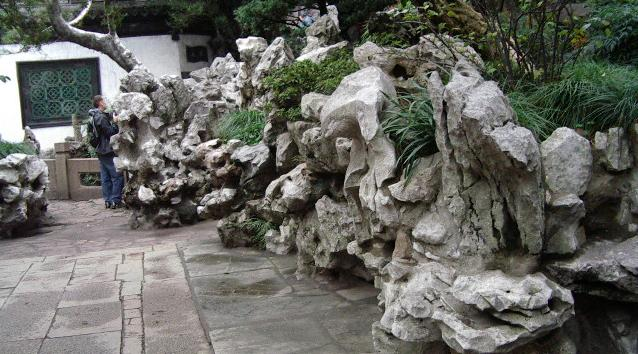
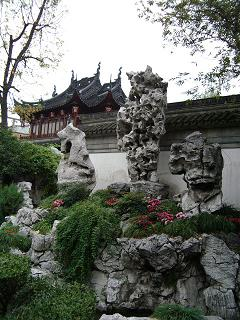
持ち主が何人か代わった園は、1105年に宋の徽宗皇帝が庭園建築のために奇石を全国から集めたのだそうで、上の写真の石にも目を見張りましたが、河童か何かが口を開けているような約３ｍの高さがある左写真中央の玉玲瓏と呼ばれる太湖石も面白いと思いました。
この玉玲瓏の下にもボコボコとした石が見えていますが、上海から２００Km 離れた浙江省の武康県から運ばれてきた武康石と呼ばれる石を、２０００トンも積み重ねて作られたという高さ１２ｍの築山は、４００年前には上海で一番高い場所であったのだそうです。

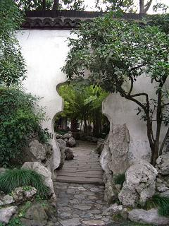
豫園は、もともと上海人の潘允瑞という四川の省長を務めた役人が、法務大臣であった父親への孝行のために建造したものだそうで、この足ツボ刺激の通路も父親の健康を気遣って作られたのだそうですが、完成した時にはすでに他界していたとされています。
塀がこんな風につぼ型（写真右）や丸や四角に切り取られているところがあり、通路のひとつにもなっているのですが、この切り取られた中に手前の庭とはまた違った庭を見ることができ、手前の庭のつくりと繰り抜かれた向こうの景観が融合して不思議な空間となっていました。
豫園周辺から東方明珠タワーへ
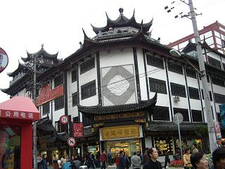
これは園に入る前に通ってきた豫園商城（場という文字も使われている）の中心にあたるところで、左端にある赤いテントのようなものは電話ボックスです。
まるでお祭りのよう…と最初に申し上げましたが、小さな露天もいくつか出ており、豫園の中（有料）も負けず劣らずでしたがご覧の通りの人通り。
この建物の一階は大きな土産物屋になっていて、二階にはいくつかのレストランになっていました。
ここで４０分ほどの自由時間を与えられ、それぞれに買い物を楽しむことができたのですが、トイレに行きたかった私は他の三人と離れて別行動をとり、スッキリして集合場所になっていたところに一旦戻ってみると、目の前にカラフルなセーターやカーディガンを並べたデパートがあり、ふらふらと誘われて店に入り、あれこれ見ている内にどんどん奥へ入り込んでしまい、元の場所に戻ってみると仲間の二人が先に戻っていて、なにやら妙な雰囲気。
あるガラス製品の店に入って見ていたところ、欲しいと思って見ていたものが棚から落ちて割れてしまったのだそうで、店の人と『壊した』『壊してない』と一悶着あったらしい…
本人が興奮してしまっていたため、戻ってきた添乗員さんやガイドさんまで巻き込んでお騒がせしてしまい、三々五々集まってきたツアーの方々も何事か？と私たちの周りを取り囲んでおりました。（＝＝；
このあと古い上海の町並を再現された【老街】という土産物や小物、骨董品などを売る小さな店舗が建ち並ぶ町の散策がありましたが、先のアクシデントが尾を引いていたようでまったく覚えておりません。
バスに戻ってお決まりのお茶と工芸品の店に立ち寄り、レストランでの夕食はやっとカレー味から離れられた！とばかりに何方も食欲旺盛。
食べなれた味にちょっと近づいた食事に満足して外に出ると、雨が降り始めており、イルミネーションに彩られた街の風景を雨粒の降りかかる窓から眺めながら【東方明珠塔】へと向かいます。
東 方 明 珠 タ ワ ー
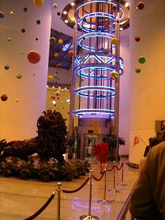
五日間の間カバンの中に仕舞われたままであった折り畳み傘がやっと役に立つわけですが、上海の夜景が見られるというこんなときに…と、五日間の好天に感謝こそすれついつい口に出てしまうお天気の神様への苦情。
大小七色の風船が高い天井から吊り下げられたフロアーへとエスカレーターで上がり、瞬間移動装置か遊園地のアトラクションのような透明ガラスの円筒形の中のエレベーターに乗り込み、地上２２０ｍの上から二番目にある球の展望台まで直行です。
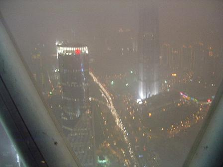
タワーの高さは４６８ｍ。
世界でもカナダのトロント、ロシアのモスクワにあるテレビ塔に次いで３番目の高さを誇るというもので、球形の展望台が三つあります。
私たちが上がった２２０ｍの展望台の上には３５０ｍの展望台があるそうですが、お天気が悪いときには霧に包まれてしまって周囲が見えなくなってしまうこともあるのだとか…
エレベーターを降りると、最初は曇ってしまって目の前のビルがやっと見えるくらいでしたが、少しずつ見えるようになってきて、鉛筆やボールペンを立てたような高いビル群が見え始め、タワーの足元には大きな川があって何隻かの船が往来しているのが見えてきました。
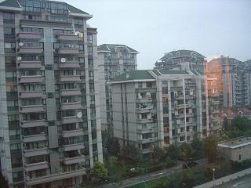
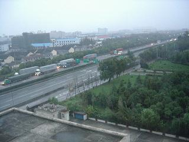
ホテルに入って部屋に落ち着いたのは１１時近くで、窓のカーテンを開けると写真左のようなマンションが建ち並んでおり、その左側を見るとメイン道路らしき片側三車線くらいの道路の向こうに街の明かりが見えていました。
写真は翌朝のものですが、昨日まで見てきた貧富の差が激しいインドとはなんとかけ離れた世界か…と、様々なことを勉強させてもらった旅であったと思いながら帰国の途につきました。


|